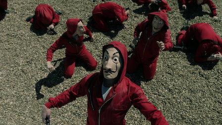

Sedat Zencirkıran
Hakkımda
Merhaba,Ben Sedat Zencirkıran 36 yaşındayım.Doğumyeri Gaziantep.Daha önceden elektrik kalite kontrol işi yapıyordum ve şimdi Front-End ile ilgileniyorum.Doğa aşığı birisiyim.Dinlemeyi ve insanlara yardımcı olmayı seviyorum.
ilgi alanlarım
Film
- Karayip Korsanları
- Yüzüklerin Efendisi
Dizi
Kitap
- Bir Aşk Masalı
- Kırmızı Pelerin
- Aşka Özür Diletmem
Sevdiğim Diziler
La casa de papel

Bu sürükleyici suç dizisi; Uluslararası Emmy Ödülleri, Premios Fénix ve Premios Iris'te En İyi Drama ödülünü kazandı.